Japandi takes the calm of Japanese minimalism and the warmth of Scandinavian design, and applies both to a bedroom specifically built for rest.
Done right, it reads as genuinely peaceful rather than just sparse.
These 14 ideas cover how to get there.


1. Add a Touch of Black
A black frame, a dark metal fixture, or one small black accent grounds the room's otherwise light, neutral palette.
This single contrast point keeps the whole room from feeling washed out, without disrupting its overall sense of calm.

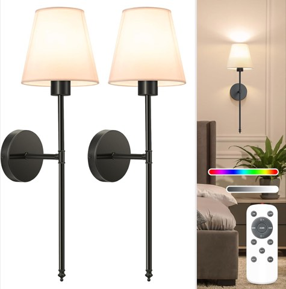
NIORSUN Rechargeable Battery Operated Wall Sconces, Set of 2, Black, Dimmable
Shop on Amazon2. Incorporate Wabi-Sabi Imperfection
A handmade ceramic, a visibly textured vase, or an intentionally imperfect piece brings the Japanese wabi-sabi philosophy into a room that could otherwise feel too polished.
This embraced imperfection is what keeps Japandi from ever reading as cold minimalism.
Wabi Sabi Rusty Vintage Vase, 6.3 Inch Tall, Rustic Pottery
Shop on Amazon3. Create a Cozy Nook
A small reading corner with a simple chair and soft lighting adds a secondary function to the room without crowding the main sleeping area.
This also gives the room a second mood, quiet daytime use, not just nighttime rest.
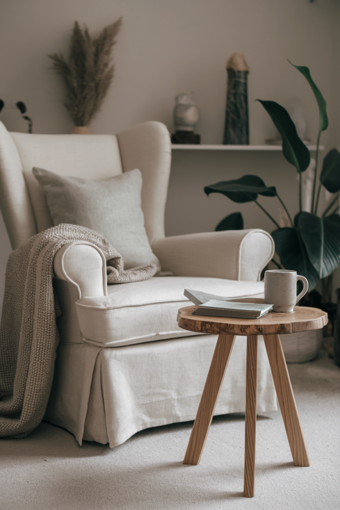
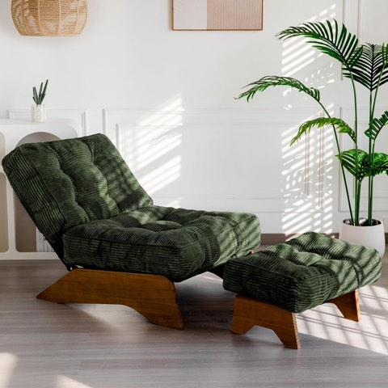
MAXYOYO Accent Chair with Ottoman, Lounge Chair with Adjustable Backrest
Shop on Amazon4. Incorporate Greenery
A single well-chosen plant brings life into the room without disrupting its restrained palette or cluttered feeling.
One plant, placed deliberately, works better here than several scattered around the room at once.
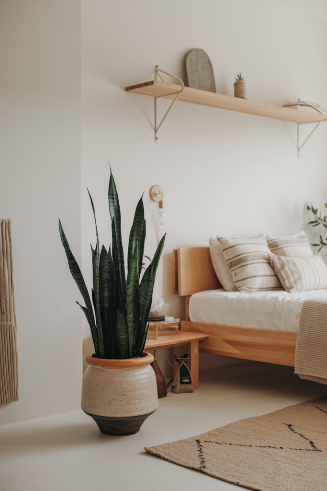

5. Use Soft, Diffused Lighting
Paper or fabric-shaded fixtures soften light the way traditional Japanese lanterns do, avoiding anything harsh or overly bright in the room.
This lighting quality does as much for the room's calm feeling as the color palette itself ever could.
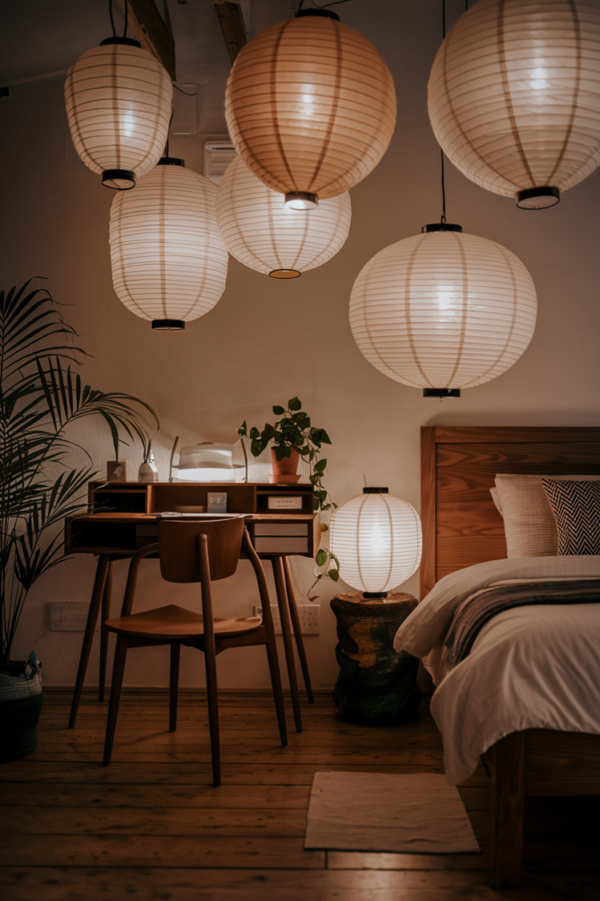

6. Add a Single Piece of Art
One considered piece, rather than a gallery wall or several smaller prints, fits Japandi's less-is-more philosophy directly.
Scale and placement matter more here than in a busier room, since there's nothing else competing for visual attention.
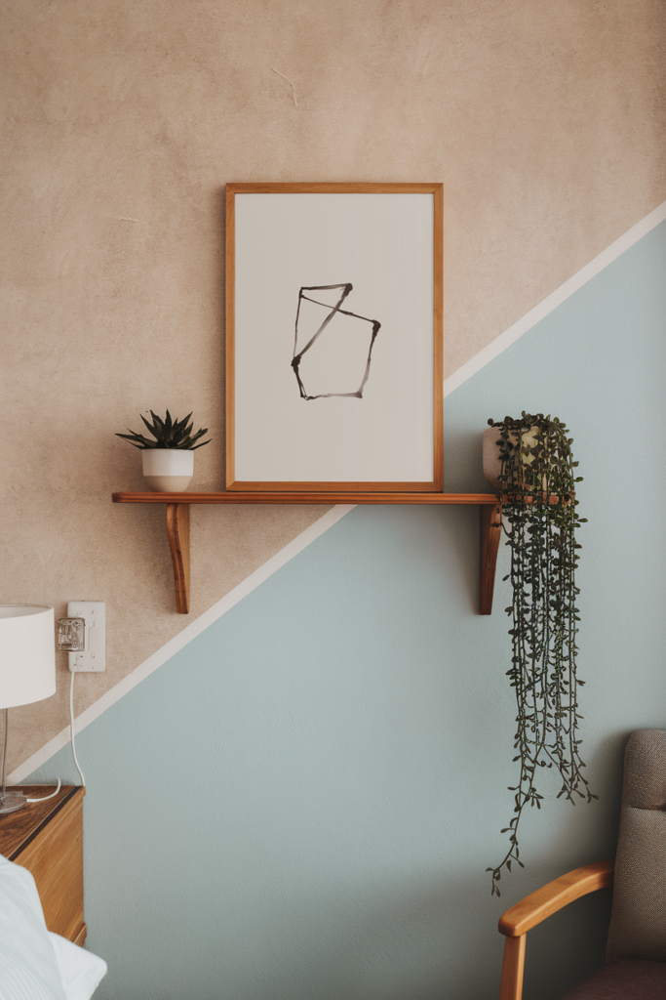
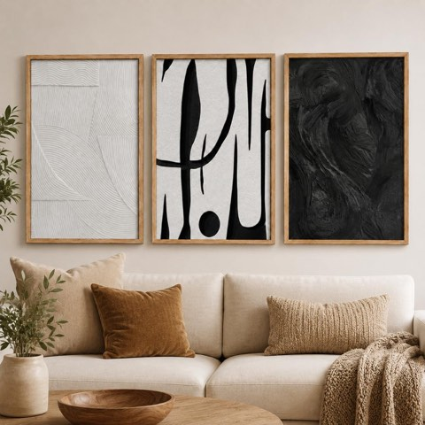
Framed Black and White Textured Abstract Canvas Wall Art, 3 Pcs, 12 x 16 Inch
Shop on Amazon7. Keep Walls Clean and Neutral
A soft white, warm gray, or muted earth tone on the walls supports the room's overall calm rather than competing with it.
This is the foundation everything else in the room gets layered onto, which makes it worth settling early in the process.
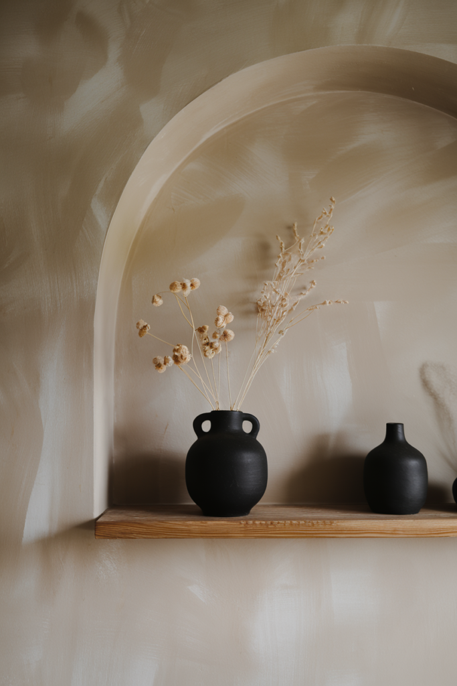


8. Bring in Natural Textures
Woven baskets, a jute rug, raw wood grain, texture does the visual work that pattern and color would do in a less restrained style.
This is what keeps an all-neutral room from feeling flat or sterile.
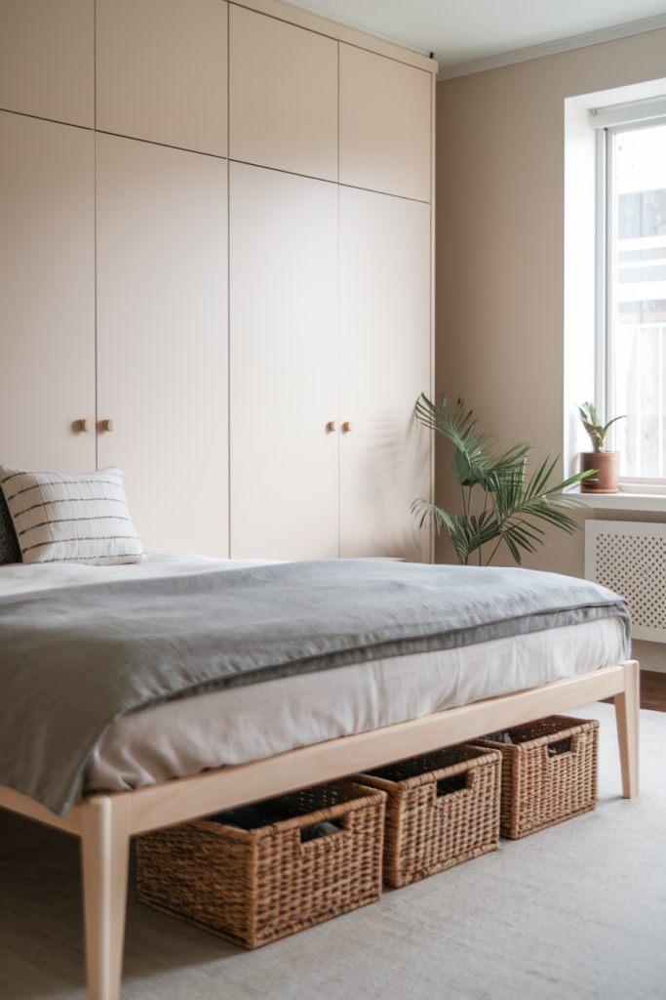
Seville Classics Handwoven Water Hyacinth Storage Cube Baskets, 2 Pack
Shop on Amazon9. Embrace Neutral Bedding
Soft whites, warm beiges, and muted earth tones on the bed itself reinforce the room's calm palette more directly than almost any other single element.
Natural fiber bedding, linen, cotton, also fits the style's emphasis on genuine, unprocessed materials over anything synthetic.
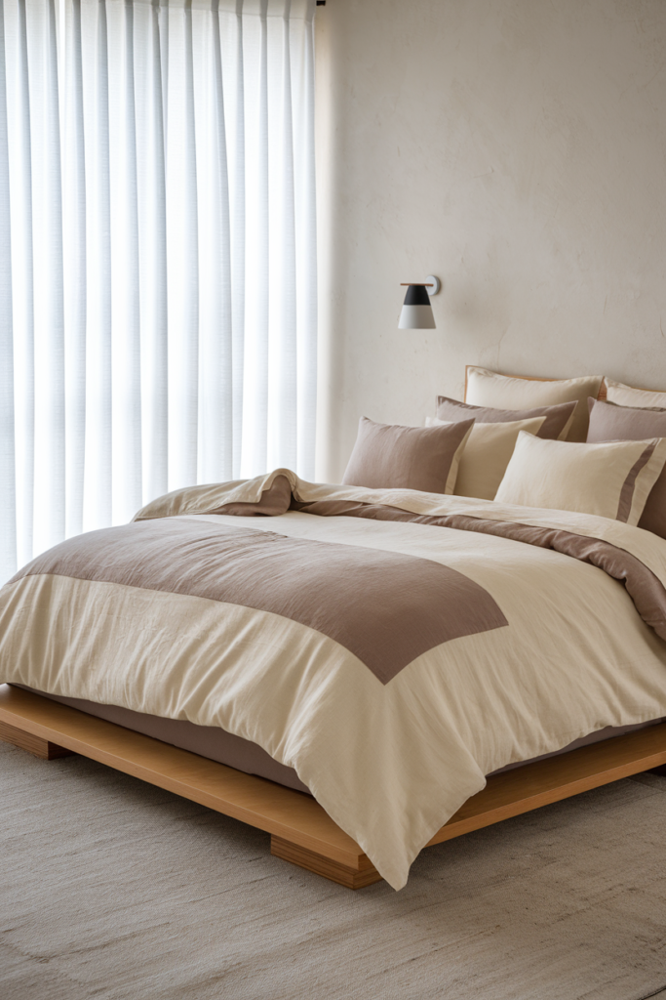
10. Use Hidden Storage
Built-in or under-bed storage keeps daily clutter out of sight entirely, which matters more in Japandi than almost any other style given how central uncluttered surfaces are to the whole look.
This is worth planning for early, since retrofitting hidden storage later is harder than designing it in from the start.
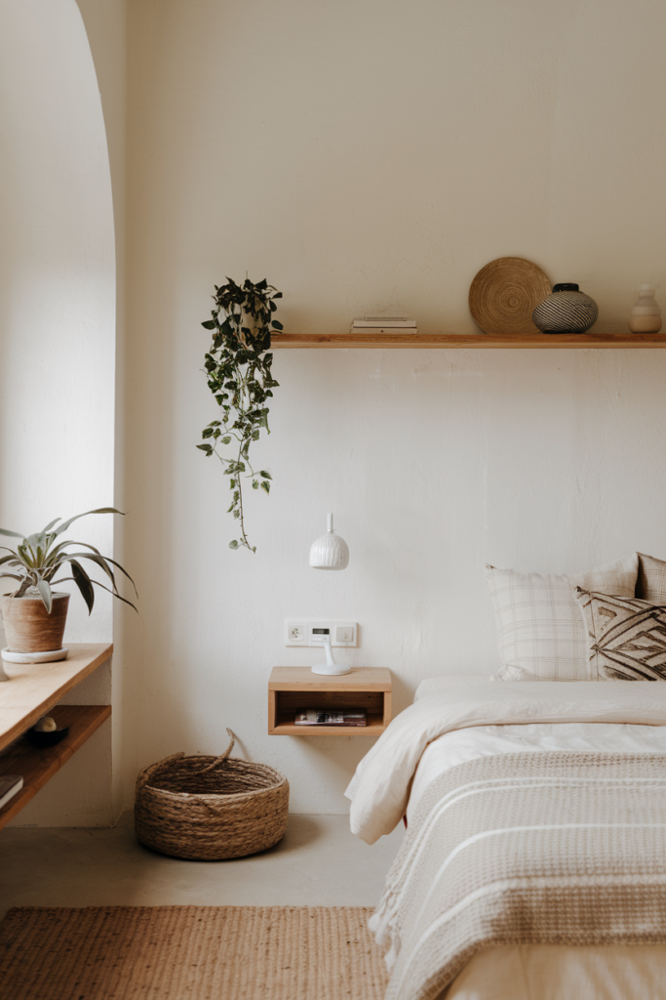
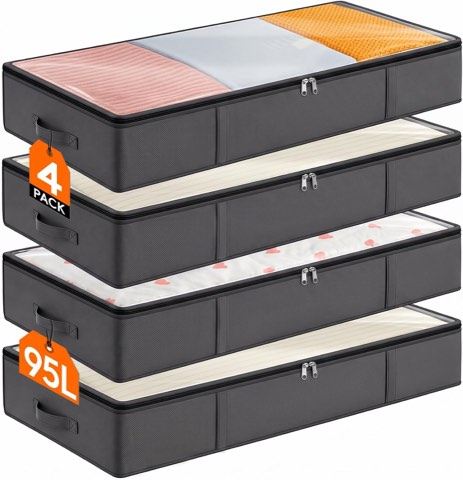
Lifewit 95L Under Bed Storage Containers, 4 Pack, Blanket Organizer, Gray
Shop on Amazon11. Opt for Sliding Doors Where Possible
A sliding closet or room door, inspired by traditional Japanese shoji screens, saves floor space that a swinging door would otherwise require.
This is a bigger commitment than most ideas on this list, but a genuinely authentic nod to the style's Japanese half.
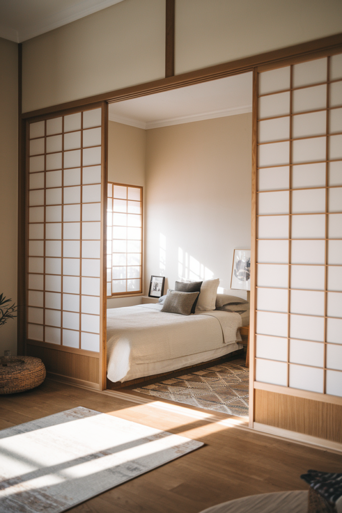
12. Use Functional Furniture Only
Every piece in a Japandi bedroom should earn its place through genuine use, not just decoration, a side table that only holds a lamp and a book, nothing more.
This restraint is part of what gives the style its calm, uncluttered feeling throughout the room.
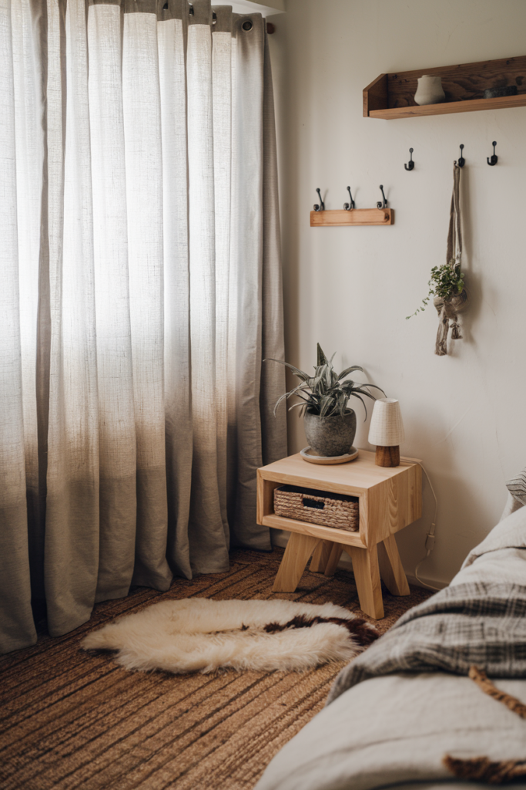
13. Add a Statement Wooden Headboard
A simple, solid wood headboard brings warmth and a natural focal point without any unnecessary ornamentation getting in the way.
This is often the one piece of furniture allowed to stand out in an otherwise restrained room.
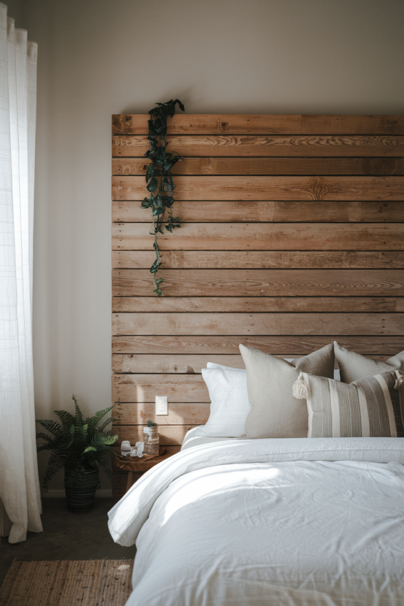
14. Start With a Low-Profile Bed Frame
A bed sitting close to the ground is one of the most recognizable Japandi signatures, echoing traditional Japanese floor-level sleeping without going all the way to a floor mattress.
This also visually opens up the room, since a lower bed takes up less vertical space than a standard frame would.
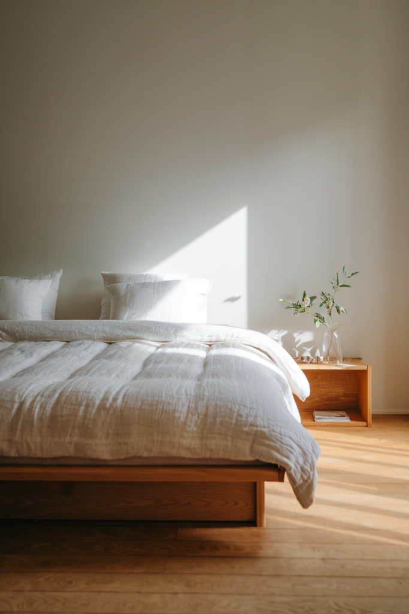
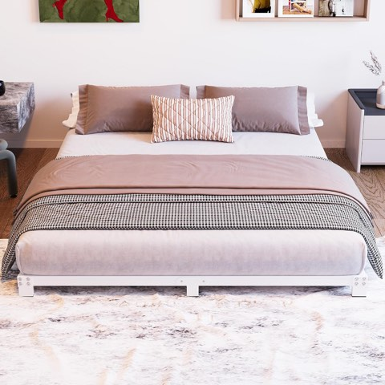
Full Size Low Profile Platform Bed Frame, 3 Inch, Heavy Duty, No Box Spring Needed
Shop on AmazonWrapping It Up
None of these 14 ideas require redoing the whole bedroom at once.
Start with the bed frame and the wall color, since both set the room's foundation, then layer in texture, lighting, and the smaller details from there.
Japandi rewards restraint, fewer, better choices consistently outperform more of everything else.